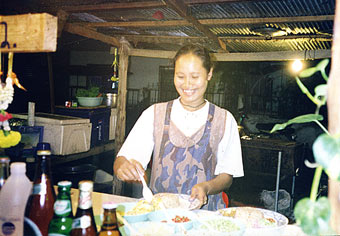
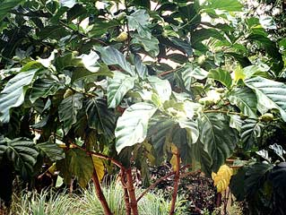
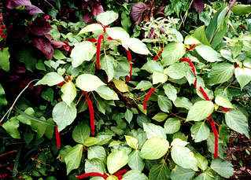

|
Sent: 17 Nov 99 13:16 GMT
web version, with photos. |
 |
| Prior Trav-E-Log: No Island | Thailand is Fantastic Food ... |
(Note:) This is the 8th in a series of Trav-E-Logs sent while traveling in S.E.Asia between Oct 16, 1999 and Jan 22, 2000.Hi Folks,
Got an early morning start in Kota Bharu and walked the 1 km to the big bus station, as no rickshaw was in sight. While walking through the crowd of taxi drivers around the station, they offered a taxi ride "because you must wait more than one hour for the bus". After checking the signs for Bus #29, you find it is only a 15 minute wait, and you have your choice of any seat on the bus. I always like the first seat opposite the driver because it has the best visibility. The fare is $0.71 for the 1 hour ride. The bus drops me off at Rantau Banjang - right in front of the border control station. After getting passport exit stamped, the 100 meter walk across the bridge reminds me of walking across the Rio Grande into Mexico. The center of the span is marked by plaques in 3 languages (English is in the middle), noting the cooperation of the two friendly governments. Will this be the Rosetta stone in the 40th century A.D? The Thai authorities give me a 30 day visa stamp (free), and direct me towards the train station, 800 meters away, to buy Baht. It's a long, hot walk. I can't believe someone hasn't established an exchange kiosk within 50 meters of the border. But this is Sungai Kolok, Thailand, not exactly a thriving metropolis like Hat Yai (HatJai) or Bangkok.
The ride along the shore is noted to be a more scenic route to my next destination, so I try to find the station for Hat Yai bound buses after cashing a traveler's check for Baht. Finally find someone that speaks a few words of English, and she tells me the next bus is a 3.5 hour wait, and arrives at Hat Yai very late at night. So I rush the one and a half miles back to the train station to find that the next reasonable train leaves in 1-1/2 hours, as the 12 o'clock train now leaves at 11, and I missed it by 1 hour. Only junk food vendors in sight, so I buy a variety of too-sweet local pastries, and make do. Watching other trains load is quit an education in efficiency. Laborers carry huge loads on their shoulders up to the train window, pass it through to the other side, where another takes it to the next train over. This even happens while the trains are moving through the station! Westerners are so inefficient!
During the pleasant, 3-1/2 hour train ride, noted many cattle egrets, blue iridescent kingfishers, farmers planting rice, a bittern, many, many rubber tree plantations, and a crow-like bird with wings the color of a female robin's breast. Also a huge pink flower, possibly a lotus in bloom.
In Hat Yai, I walk to the Cathy guesthouse, listed in the Lonely Planet Guide, and it's a winner. The dorm is spacious, with only three beds. For dinner it's down to a large grouping of food vendors, and the smells are heavenly. Four skewers, 2 types of eggroll, Thai rice, and a bottle of Sprite for $1.65. On the way back, I buy a Thai souvenir tee. She started the bartering at $5.25, but when the price dropped to $2.10, I couldn't pass up the bargain.
Well, they are kicking me out as the shop is closing. Will have to finish the Thai episode later.
Bill